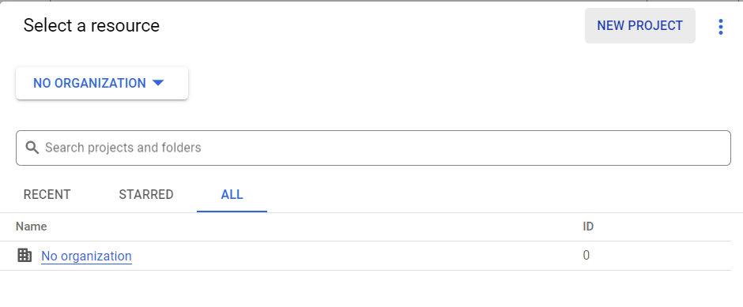
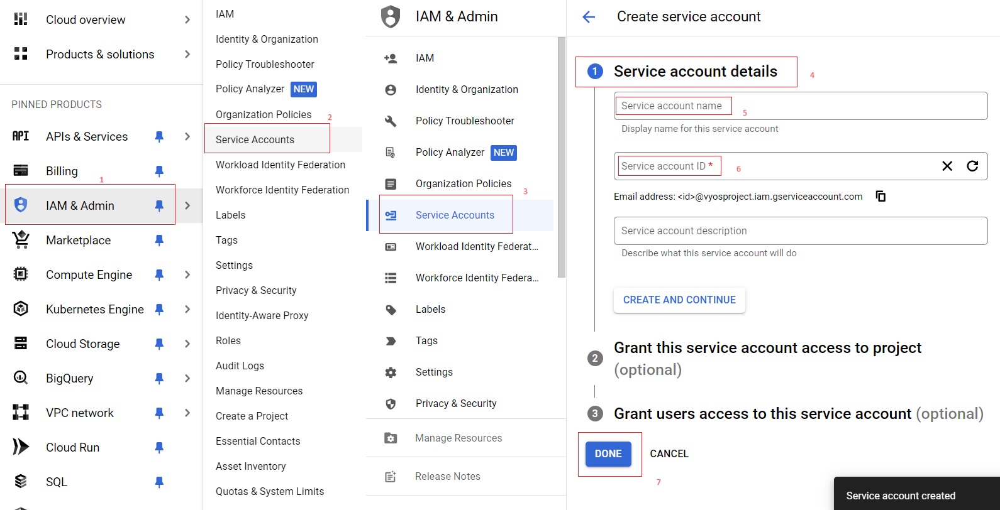
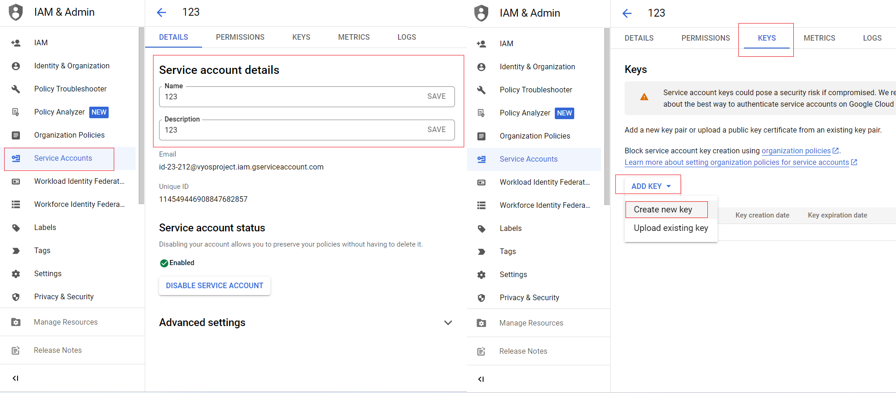
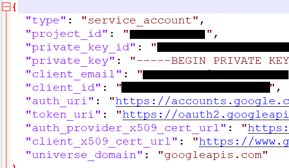

Deploying VyOS in the Google Cloud
With the help of Terraform, you can quickly deploy VyOS-based infrastructure in the Google Cloud. If necessary, the infrastructure can be removed using terraform. Also we will make provisioning using Ansible.
In this case, we’ll create the necessary files for Terraform and Ansible. Next, using Terraform, we’ll create a single instance on the Google Cloud and make provisioning using Ansible.
Preparation steps for deploying VyOS on Google
How to create a single instance and install your configuration using Terraform+Ansible+Google Step by step:
Google Cloud
1 Create an account with Google Cloud and a new project
{kind=link}
2 Create a service aacount and download your key (.JSON)
 {kind=link}
{kind=link}
The .JSON file download automaticly after creating and will look like:
{kind=link}
Terraform
1 Create an UNIX or Windows instance
2 Download and install Terraform
3 Create the folder for example /root/google
mkdir /root/google
4 Copy all files into your Terraform project “/root/google” (vyos.tf, var.tf, terraform.tfvars, .JSON), more detailed see Structure of files Terrafom for google cloud
5 Type the commands :
cd /<your folder>
terraform init
Ansible
1 Create an UNIX instance whenever you want (local, cloud, and so on)
2 Download and install Ansible
3 Create the folder for example /root/google/
4 Copy all files into your Ansible project “/root/google/” (ansible.cfg, instance.yml, mykey.json and “all”), more detailed see Structure of files Ansible for Google Cloud
mykey.json you have to get using step 2 of the Google Cloud
Start
Type the commands on your Terraform instance:
cd /<your folder>
terraform plan
terraform apply
yes
Start creating a Google Cloud instance and check the result.
# terraform apply
Terraform used the selected providers to generate the following execution plan. Resource actions are indicated with the following symbols:
+ create
Terraform will perform the following actions:
# google_compute_firewall.tcp_22[0] will be created
+ resource "google_compute_firewall" "tcp_22" {
+ creation_timestamp = (known after apply)
+ destination_ranges = (known after apply)
+ direction = (known after apply)
+ enable_logging = (known after apply)
+ id = (known after apply)
+ name = "vyos-tcp-22"
+ network = "default"
+ priority = 1000
+ project = "vyosproject"
+ self_link = (known after apply)
+ source_ranges = [
+ "0.0.0.0/0",
]
+ target_tags = [
+ "vyos-deployment",
]
+ allow {
+ ports = [
+ "22",
]
+ protocol = "tcp"
}
}
# google_compute_firewall.udp_500_4500[0] will be created
+ resource "google_compute_firewall" "udp_500_4500" {
+ creation_timestamp = (known after apply)
+ destination_ranges = (known after apply)
+ direction = (known after apply)
+ enable_logging = (known after apply)
+ id = (known after apply)
+ name = "vyos-udp-500-4500"
+ network = "default"
+ priority = 1000
+ project = "vyosproject"
+ self_link = (known after apply)
+ source_ranges = [
+ "0.0.0.0/0",
]
+ target_tags = [
+ "vyos-deployment",
]
+ allow {
+ ports = [
+ "500",
+ "4500",
]
+ protocol = "udp"
}
}
# google_compute_instance.default will be created
+ resource "google_compute_instance" "default" {
+ can_ip_forward = true
+ cpu_platform = (known after apply)
+ current_status = (known after apply)
+ deletion_protection = false
+ effective_labels = (known after apply)
+ guest_accelerator = (known after apply)
+ id = (known after apply)
+ instance_id = (known after apply)
+ label_fingerprint = (known after apply)
+ machine_type = "n2-highcpu-4"
+ metadata = {
+ "enable-oslogin" = "FALSE"
+ "serial-port-enable" = "TRUE"
+ "user-data" = ""
}
+ metadata_fingerprint = (known after apply)
+ min_cpu_platform = (known after apply)
+ name = "vyos"
+ project = "vyosproject"
+ self_link = (known after apply)
+ tags_fingerprint = (known after apply)
+ terraform_labels = (known after apply)
+ zone = "us-west1-a"
+ boot_disk {
+ auto_delete = true
+ device_name = (known after apply)
+ disk_encryption_key_sha256 = (known after apply)
+ kms_key_self_link = (known after apply)
+ mode = "READ_WRITE"
+ source = (known after apply)
+ initialize_params {
+ image = "projects/sentrium-public/global/images/vyos-1-3-5-20231222143039"
+ labels = (known after apply)
+ provisioned_iops = (known after apply)
+ provisioned_throughput = (known after apply)
+ size = (known after apply)
+ type = (known after apply)
}
}
+ network_interface {
+ internal_ipv6_prefix_length = (known after apply)
+ ipv6_access_type = (known after apply)
+ ipv6_address = (known after apply)
+ name = (known after apply)
+ network = "default"
+ network_ip = (known after apply)
+ nic_type = "GVNIC"
+ stack_type = (known after apply)
+ subnetwork = "default"
+ subnetwork_project = (known after apply)
+ access_config {
+ nat_ip = (known after apply)
+ network_tier = (known after apply)
}
}
}
# local_file.ip will be created
+ resource "local_file" "ip" {
+ content = (known after apply)
+ content_base64sha256 = (known after apply)
+ content_base64sha512 = (known after apply)
+ content_md5 = (known after apply)
+ content_sha1 = (known after apply)
+ content_sha256 = (known after apply)
+ content_sha512 = (known after apply)
+ directory_permission = "0777"
+ file_permission = "0777"
+ filename = "ip.txt"
+ id = (known after apply)
}
# null_resource.SSHconnection1 will be created
+ resource "null_resource" "SSHconnection1" {
+ id = (known after apply)
}
# null_resource.SSHconnection2 will be created
+ resource "null_resource" "SSHconnection2" {
+ id = (known after apply)
}
Plan: 6 to add, 0 to change, 0 to destroy.
Changes to Outputs:
+ public_ip_address = (known after apply)
╷
│ Warning: Quoted references are deprecated
│
│ on vyos.tf line 126, in resource "null_resource" "SSHconnection1":
│ 126: depends_on = ["google_compute_instance.default"]
│
│ In this context, references are expected literally rather than in quotes. Terraform 0.11 and earlier required quotes, but quoted references are now deprecated and will be removed in a
│ future version of Terraform. Remove the quotes surrounding this reference to silence this warning.
│
│ (and one more similar warning elsewhere)
╵
Do you want to perform these actions?
Terraform will perform the actions described above.
Only 'yes' will be accepted to approve.
Enter a value: yes
google_compute_firewall.udp_500_4500[0]: Creating...
google_compute_firewall.tcp_22[0]: Creating...
google_compute_instance.default: Creating...
google_compute_firewall.udp_500_4500[0]: Still creating... [10s elapsed]
google_compute_firewall.tcp_22[0]: Still creating... [10s elapsed]
google_compute_instance.default: Still creating... [10s elapsed]
google_compute_firewall.tcp_22[0]: Creation complete after 16s [id=projects/vyosproject/global/firewalls/vyos-tcp-22]
google_compute_firewall.udp_500_4500[0]: Creation complete after 16s [id=projects/vyosproject/global/firewalls/vyos-udp-500-4500]
google_compute_instance.default: Creation complete after 20s [id=projects/vyosproject/zones/us-west1-a/instances/vyos]
null_resource.SSHconnection1: Creating...
null_resource.SSHconnection2: Creating...
null_resource.SSHconnection1: Provisioning with 'file'...
null_resource.SSHconnection2: Provisioning with 'remote-exec'...
null_resource.SSHconnection2 (remote-exec): Connecting to remote host via SSH...
null_resource.SSHconnection2 (remote-exec): Host: 10.***.***.104
null_resource.SSHconnection2 (remote-exec): User: root
null_resource.SSHconnection2 (remote-exec): Password: true
null_resource.SSHconnection2 (remote-exec): Private key: false
null_resource.SSHconnection2 (remote-exec): Certificate: false
null_resource.SSHconnection2 (remote-exec): SSH Agent: false
null_resource.SSHconnection2 (remote-exec): Checking Host Key: false
null_resource.SSHconnection2 (remote-exec): Target Platform: unix
local_file.ip: Creating...
local_file.ip: Creation complete after 0s [id=7d568c3b994a018c942a3cdb952ccbf3c729d0ca]
null_resource.SSHconnection2 (remote-exec): Connected!
null_resource.SSHconnection1: Creation complete after 4s [id=5175298735911137161]
null_resource.SSHconnection2 (remote-exec): PLAY [integration of terraform and ansible] ************************************
null_resource.SSHconnection2 (remote-exec): TASK [Wait 300 seconds, but only start checking after 60 seconds] **************
null_resource.SSHconnection2: Still creating... [10s elapsed]
null_resource.SSHconnection2: Still creating... [20s elapsed]
null_resource.SSHconnection2: Still creating... [30s elapsed]
null_resource.SSHconnection2: Still creating... [40s elapsed]
null_resource.SSHconnection2: Still creating... [50s elapsed]
null_resource.SSHconnection2: Still creating... [1m0s elapsed]
null_resource.SSHconnection2: Still creating... [1m10s elapsed]
null_resource.SSHconnection2 (remote-exec): ok: [104.***.***.158]
null_resource.SSHconnection2 (remote-exec): TASK [Configure general settings for the vyos hosts group] *********************
null_resource.SSHconnection2: Still creating... [1m20s elapsed]
null_resource.SSHconnection2 (remote-exec): changed: [104.***.***.158]
null_resource.SSHconnection2 (remote-exec): PLAY RECAP *********************************************************************
null_resource.SSHconnection2 (remote-exec): 104.***.***.158 : ok=2 changed=1 unreachable=0 failed=0 skipped=0 rescued=0 ignored=0
null_resource.SSHconnection2: Creation complete after 1m22s [id=3355727070503709742]
Apply complete! Resources: 6 added, 0 changed, 0 destroyed.
Outputs:
public_ip_address = "104.***.***.158"
After executing all the commands, you will have your VyOS instance on the Google Cloud with your configuration; it’s a very convenient decision. If you need to delete the instance, please type the command:
terraform destroy
Troubleshooting
1 Increase the time in the file instance.yml from 300 sec to 500 sec or more. (It depends on your location). Make sure that you have opened access to the instance in the security group.
2 Terraform doesn’t connect via SSH to your Ansible instance: you have to check the correct login and password in the part of the file VyOS.tf
connection {
type = "ssh"
user = "root" # open root access using login and password on your Ansible
password = var.password # check password in the file terraform.tfvars isn't empty
host = var.host # check the correct IP address of your Ansible host
}
Make sure that Ansible is pinging from Terrafom.
Structure of files Terrafom for Google Cloud
.
├── vyos.tf # The main script
├── ***.JSON # The credential file from Google Cloud
├── var.tf # The file of all variables in "vyos.tf"
└── terraform.tfvars # The value of all variables (passwords, login, IP addresses and so on)
File contents of Terrafom for Google Cloud
vyos.tf
##############################################################################
# Build a VyOS VM from the Marketplace
#
# After deploying the GCP instance and getting an IP address, the IP address is copied into the file
#"ip.txt" and copied to the Ansible node for provisioning.
##############################################################################
terraform {
required_providers {
google = {
source = "hashicorp/google"
}
}
}
provider "google" {
project = var.project_id
request_timeout = "60s"
credentials = file(var.gcp_auth_file)
}
locals {
network_interfaces = [for i, n in var.networks : {
network = n,
subnetwork = length(var.sub_networks) > i ? element(var.sub_networks, i) : null
external_ip = length(var.external_ips) > i ? element(var.external_ips, i) : "NONE"
}
]
}
resource "google_compute_instance" "default" {
name = var.goog_cm_deployment_name
machine_type = var.machine_type
zone = var.zone
metadata = {
enable-oslogin = "FALSE"
serial-port-enable = "TRUE"
user-data = var.vyos_user_data
}
boot_disk {
initialize_params {
image = var.image
}
}
can_ip_forward = true
dynamic "network_interface" {
for_each = local.network_interfaces
content {
network = network_interface.value.network
subnetwork = network_interface.value.subnetwork
nic_type = "GVNIC"
dynamic "access_config" {
for_each = network_interface.value.external_ip == "NONE" ? [] : [1]
content {
nat_ip = network_interface.value.external_ip == "EPHEMERAL" ? null : network_interface.value.external_ip
}
}
}
}
}
resource "google_compute_firewall" "tcp_22" {
count = var.enable_tcp_22 ? 1 : 0
name = "${var.goog_cm_deployment_name}-tcp-22"
network = element(var.networks, 0)
allow {
ports = ["22"]
protocol = "tcp"
}
source_ranges = ["0.0.0.0/0"]
target_tags = ["${var.goog_cm_deployment_name}-deployment"]
}
resource "google_compute_firewall" "udp_500_4500" {
count = var.enable_udp_500_4500 ? 1 : 0
name = "${var.goog_cm_deployment_name}-udp-500-4500"
network = element(var.networks, 0)
allow {
ports = ["500", "4500"]
protocol = "udp"
}
source_ranges = ["0.0.0.0/0"]
target_tags = ["${var.goog_cm_deployment_name}-deployment"]
}
output "public_ip_address" {
value = google_compute_instance.default.network_interface[0].access_config[0].nat_ip
}
##############################################################################
#
# IP of google instance copied to a file ip.txt in local system Terraform
# ip.txt looks like:
# cat ./ip.txt
# ххх.ххх.ххх.ххх
##############################################################################
resource "local_file" "ip" {
content = google_compute_instance.default.network_interface[0].access_config[0].nat_ip
filename = "ip.txt"
}
#connecting to the Ansible control node using SSH connection
##############################################################################
# Steps "SSHconnection1" and "SSHconnection2" need to get file ip.txt from the terraform node and start remotely the playbook of Ansible.
##############################################################################
resource "null_resource" "SSHconnection1" {
depends_on = ["google_compute_instance.default"]
connection {
type = "ssh"
user = "root"
password = var.password
host = var.host
}
#copying the ip.txt file to the Ansible control node from local system
provisioner "file" {
source = "ip.txt"
destination = "/root/google/ip.txt" # The folder of your Ansible project
}
}
resource "null_resource" "SSHconnection2" {
depends_on = ["google_compute_instance.default"]
connection {
type = "ssh"
user = "root"
password = var.password
host = var.host
}
#command to run Ansible playbook on remote Linux OS
provisioner "remote-exec" {
inline = [
"cd /root/google/",
"ansible-playbook instance.yml" # more detailed in "File contents of Ansible for Google Cloud"
]
}
}
var.tf
variable "image" {
type = string
default = "projects/sentrium-public/global/images/vyos-1-3-5-20231222143039"
}
variable "project_id" {
type = string
}
variable "zone" {
type = string
}
##############################################################################
# You can choose more chipper type than n2-highcpu-4
##############################################################################
variable "machine_type" {
type = string
default = "n2-highcpu-4"
}
variable "networks" {
description = "The network name to attach the VM instance."
type = list(string)
default = ["default"]
}
variable "sub_networks" {
description = "The sub network name to attach the VM instance."
type = list(string)
default = ["default"]
}
variable "external_ips" {
description = "The external IPs assigned to the VM for public access."
type = list(string)
default = ["EPHEMERAL"]
}
variable "enable_tcp_22" {
description = "Allow SSH traffic from the Internet"
type = bool
default = true
}
variable "enable_udp_500_4500" {
description = "Allow IKE/IPSec traffic from the Internet"
type = bool
default = true
}
variable "vyos_user_data" {
type = string
default = ""
}
// Marketplace requires this variable name to be declared
variable "goog_cm_deployment_name" {
description = "VyOS Universal Router Deployment"
type = string
default = "vyos"
}
# GCP authentication file
variable "gcp_auth_file" {
type = string
description = "GCP authentication file"
}
variable "password" {
description = "pass for Ansible"
type = string
sensitive = true
}
variable "host"{
description = "The IP of my Ansible"
type = string
}
terraform.tfvars
##############################################################################
# Must be filled in
##############################################################################
zone = "us-west1-a"
gcp_auth_file = "/root/***/***.json" # path of your .json file
project_id = "" # the google project
password = "" # password for Ansible SSH
host = "" # IP of my Ansible
Structure of files Ansible for Google Cloud
.
├── group_vars
└── all
├── ansible.cfg
└── instance.yml
File contents of Ansible for Google Cloud
ansible.cfg
[defaults]
inventory = /root/google/ip.txt
host_key_checking= False
remote_user=vyos
instance.yml
##############################################################################
# About tasks:
# "Wait 300 seconds, but only start checking after 60 seconds" - try to make ssh connection every 60 seconds until 300 seconds
# "Configure general settings for the VyOS hosts group" - make provisioning into Google Cloud VyOS node
# You have to add all necessary cammans of VyOS under the block "lines:"
##############################################################################
- name: integration of terraform and ansible
hosts: all
gather_facts: 'no'
tasks:
- name: "Wait 300 seconds, but only start checking after 60 seconds"
wait_for_connection:
delay: 60
timeout: 300
- name: "Configure general settings for the VyOS hosts group"
vyos_config:
lines:
- set system name-server xxx.xxx.xxx.xxx
save:
true
group_vars/all
ansible_connection: ansible.netcommon.network_cli
ansible_network_os: vyos.vyos.vyos
ansible_user: vyos
ansible_ssh_pass: vyos
Sourse files for Google Cloud from GIT
All files about the article can be found here